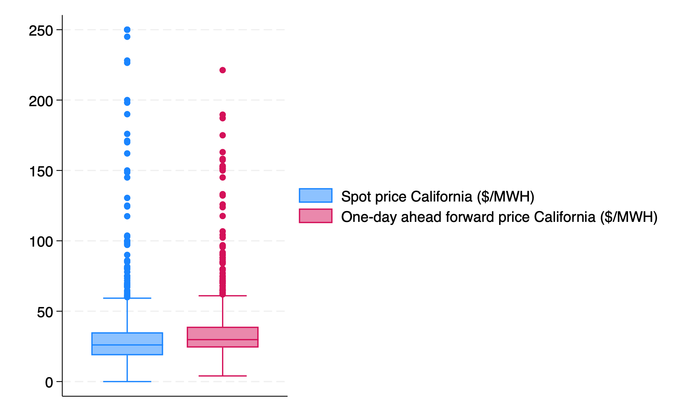
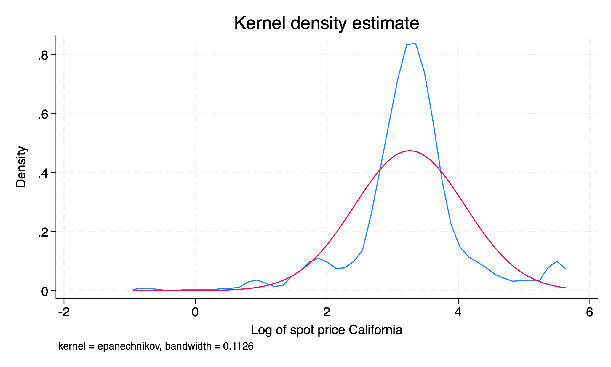

Observational, categorical, time-series data What is my most-visited coffee shop each month for 12 months?
Observational, numerical, panel data How many times does each student in 102 visit the Canvas page each month throughout the quarter?
Experimental, discrete numerical, cross-sectional data How many cases of COVID do treated individuals in a vaccine trial develop relative to a placebo group?
Experimental, categorical, repeated cross-sectional data Which of 5 new flavors of a drink do multiple waves of subjects prefer in a brand experiment?
What type of data are the following:
Midterm 1 scores for one class of ECN 102 observational, continuous numerical, cross-sectional
Final grades (%) for ECN 102 from the last 5 years observational, continuous numerical, repeated cross-section
All homework grades (graded pass/fail) for one student in ECN 102 this quarter observational, categorical, time-series data
All homework grades (graded pass/fail) for all students in ECN 102 this quarter observational, categorical, panel
Question 2: Univariate data
For the given sample 0, 4, 5, 2, 3, 2, 11, 17, 6:
Calculate the mean, median, mode, variance, and standard deviation from first principles \(\boldsymbol{\bar{x}= 5.\bar{5}, Median = 4, Mode=2,s^2=28.3,s=5.3}\)
Without using the formula, is this data symmetric or skewed? How do you know? Is it normally distributed? Since \(\boldsymbol{\bar{x}> Median}\), the data is right-skewed and not symmetric. This means it cannot be normal.
How would your above calculations change if we subtracted 7 from each observation? If we multiplied by 2 and then subtracted 7? How do these differ? Addition and subtraction does not affect our measures of spread and would shift our measures of central tendency down by 7. Multiplying by two and subtracting 7 would shift our measures of spread by \(2^2\) (\(s^2\)) or 2 (s) and our measures of central tendency by \(2x-7\).
Compute z-scores for each observation. What is the mean of these z-scores? What is the standard deviation? Does this surprise you? \(\boldsymbol{z_i=\frac{x_i-5.\bar{5}}{5.3}}\); \(z\sim(0,1)\)as we expect.
Do you expect these z-scores to be normally distributed? Why or why not? No. As our underlying sample is not normally distributed, standardizing our data will not make it become normal.
Question 3: Manual data entry
Use the following code to input some data into your Stata browser (it does not have to match my data) and compute summary statistics.
input myvar // this can be any name you wish03514093145endsummarize myvar, detail
What is the IQR of your data? What is the skewness and kurtosis? What do these values mean? IQR = 75%ile-25%ile. Skewness > 0 is right-skewed, < 0 is left-skewed. Kurtosis > 3 means fatter tails than the normal; < 3 means thinner tails.
Obtain a table of frequencies for your data using tabulate [varname].
Histogram of manually entered sample data with bin width 1.
Question 4: Data in Stata
Download AED_CALELECTRICITY.DTA from the website above and bring it into Stata.
Describe the data using describe — what variables are here? What do they correspond to?
quiuse AED_CALELECTRICITY, cleardescribe
Contains data from AED_CALELECTRICITY.dta
Observations: 682 Data for A. Colin Cameron (2015): Analysis of Economics Data, W.W. Norton
Variables: 7 2 Mar 2015 20:17
-----------------------------------------------------------------------------------------------------------------------------------------
Variable Storage Display Value
name type format label Variable label
-----------------------------------------------------------------------------------------------------------------------------------------
month byte %8.0g Month of year number
year int %8.0g Year
day byte %8.0g Day of month
hour byte %8.0g Hour of day (24 hour clock)
npx float %9.0g One-day ahead forward price California ($/MWH)
niso float %9.0g Spot price California ($/MWH)
diff float %9.0g niso - npx
-----------------------------------------------------------------------------------------------------------------------------------------
Sorted by:
Obtain a box plot for both the spot price and one-day ahead forward price of electricity using graph box [varnames] and save it with graph export myboxplot.png, replace.
graph box niso npxgraphexport hw1box.png, replace

Box plots of California electricity spot price (niso) and one-day ahead forward price (npx).
Obtain summary statistics for both series. Which has a higher degree of dispersion? Are they symmetric or skewed?
To compare dispersion, we should compare the coefficient of variation, \(\boldsymbol{CV=\frac{s}{\bar{x}}}\).
\(\boldsymbol{CV_{niso}=\frac{45.8}{37.5}>CV_{npx}=\frac{27.1}{37.2}}\), so the spot price has higher dispersion.
Log transform the spot price variable and create a new variable ln_niso using generate ln_niso = ln(niso). Label this variable “Log of spot price California” using label variable ln_niso [VARLABEL]
gen ln_niso = ln(niso)la var ln_niso "Log of spot price California"
Plot the kernel density functions of both niso and ln_niso (in separate graphs) against a normal density function with kdensity [varname], normal. How does the shape of the distribution change? Is this surprising? Which appears more normal?
Kernel density of California spot electricity price (niso) with normal density overlay.

Kernel density of log California spot electricity price (ln_niso) with normal density overlay.
The data becomes less right-skewed and more normal with the log transformation, as we expect. Log transformations can be used to somewhat normalize right-skewed data.
Plot a histogram of niso and ln_niso together on the same graph with the code below. Does this look strange? Why might this be?